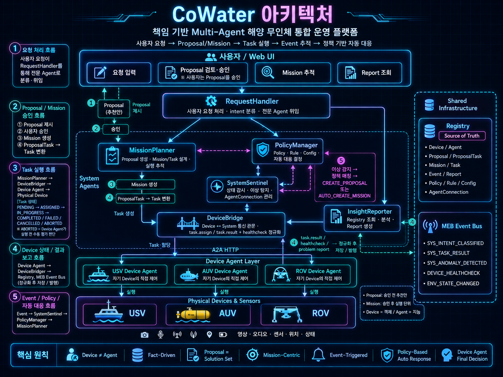

CoWater는 해양 무인체와 해양 데이터를 통합하고, AI Agent가 상황 인식, 위험 판단, 임무 관리, 대응 지원을 수행하는 운영 플랫폼입니다.
해양 무인체와 해양 데이터를 통합하고, AI Agent를 통해 상황 인식과 대응 지원을 수행합니다.

CoWater는 상황 인식, 위험 판단, 임무 관리, 제한적 자동 대응을 하나의 운영 체계로 묶어 이 문제를 풀어냅니다.
CoWater는 요청을 바로 실행하지 않고, 먼저 후보를 만들고, 승인된 계획만 임무로 바꿉니다.
목표를 정하고, 제안된 계획을 승인합니다.
계획을 만들고, 실행을 조율하고, 기록을 남깁니다.
실제 해양 환경에서 작업을 수행합니다.
핵심은 사람이 모든 세부 명령을 직접 다루지 않아도 된다는 점입니다.
사람이 목표를 정하고 CoWater가 계획과 기록을 돕는 단계입니다.
위험 감지와 제한적 자동 대응을 정책 중심으로 넓혀갑니다.
사람의 개입을 최소화한 자율 운영 체계로 발전시키는 것이 최종 목표입니다.
소개 자료는 프로젝트의 전체 흐름을 먼저 보여주고, 이후에는 구현 범위를 더 구체화할 예정입니다.
CoWater는 해양 무인체 운영을 하나의 흐름으로 묶고, 단계적으로 자율도를 높여 최종적으로는 완전한 무인 시스템을 목표로 하는 플랫폼입니다.